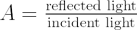

Albedo is a measurement of the amount of light reflected from the surface of a celestial object, such as a planet, satellite, comet or asteroid. The albedo is the ratio of the reflected light to the incident light:

and has values between:
- 0: a black object that absorbs all light and reflects none; and
- 1: a white object that reflects all light and absorbs none.
Planets and satellites with clouds tend to have a high albedo, while rocky objects such as asteroids have a low albedo. The albedo of an object changes with wavelength, depending on the efficiency of reflection for different parts of the electromagnetic spectrum. The albedo of the Earth changes slightly with the seasons, due to differences in the amount of cloud cover and the presence of snow in either hemisphere and at the poles.
The table below gives approximate values of albedo for each of the planets, the Moon and Pluto:
| Planet | Bond Albedo | Geometric Albedo |
|---|---|---|
| Mercury | 0.12 | 0.14 |
| Venus | 0.75 | 0.84 |
| Earth | 0.30 | 0.37 |
| Moon | 0.12 | 0.11 |
| Mars | 0.16 | 0.15 |
| Jupiter | 0.34 | … |
| Saturn | 0.34 | … |
| Uranus | 0.30 | … |
| Neptune | 0.29 | … |
| Pluto | 0.4 | 0.44-0.61 |
Bond albedos – total radiation reflected from an object compared to the total incident radiation from the Sun. Geometric albedos – the amount of radiation relative to that from a flat Lambertian surface which is an ideal reflector at all wavelengths.